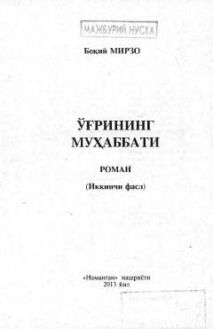

OMInson savdosi va vatanga sadoqat mavzusidagi ta'sirli ijtimoiy roman.
Ushbu asar inson savdosi, vatanni sevish va xorijdagi vatandoshlarimizning taqdiri haqida hikoya qiladi. Roman qahramonlarning hayotiy sinovlari, oilaviy munosabatlar va qiyin vaziyatlarda matonat koʻrsatish mavzularini qamrab oladi.